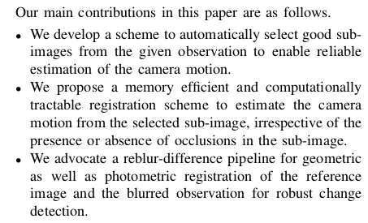
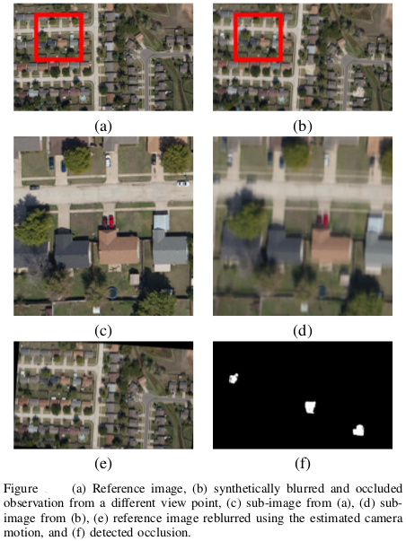

|  |  |
We address the challenging problem of registration and change detection in very large motion blurred images. The unreasonable demand that this task puts on computational and memory resources precludes the possibility of any direct attempt at solving this problem. We address this issue by observing the fact that the camera motion experienced by a sufficiently large sub-image is approximately the same as that of the entire image itself. We devise an algorithm for judicious sub-image selection so that the camera motion can be deciphered correctly, irrespective of the presence or absence of occluder. We follow a reblur-difference frame- work to detect changes as this is an artifact-free pipeline unlike the traditional deblur-difference approach. We demonstrate the results of our algorithm on both synthetic and real data.
Vijay Rengarajan, Abhijith Punnappurath, A.N. Rajagopalan, and Guna Seetharaman
CVPR Workshop on Registration of Very Large Images, Columbus, Ohio, USA
June 2014 PDF